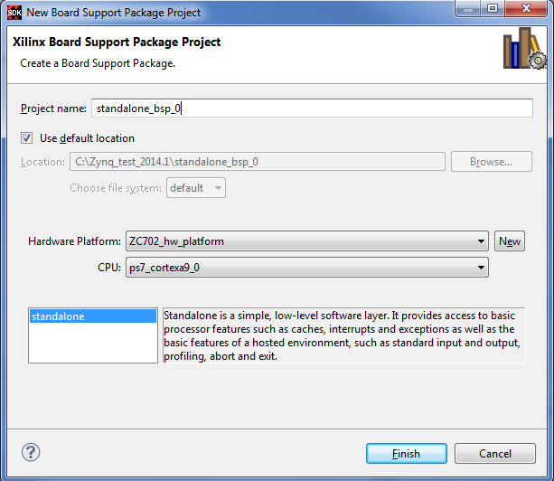

Importing a Hardware Platform Specification File
SDK requires that you specify a hardware platform specification file before you can start developing C/C++ application projects.
When launched from Vivado®, SDK specifies the hardware platform specification file as an argument and you can skip this step.
When using SDK for the first time with a given workspace, select File > New > Project > Xilinx > Hardware Platform Specification to open the New Hardware Project dialog box. In this dialog box, you can specify the location of the hardware platform specification file. When creating a new Xilinx C or C++ application project, SDK opens the New Hardware Project dialog box when the Create New option is selected in the Hardware Platform drop-down box.
